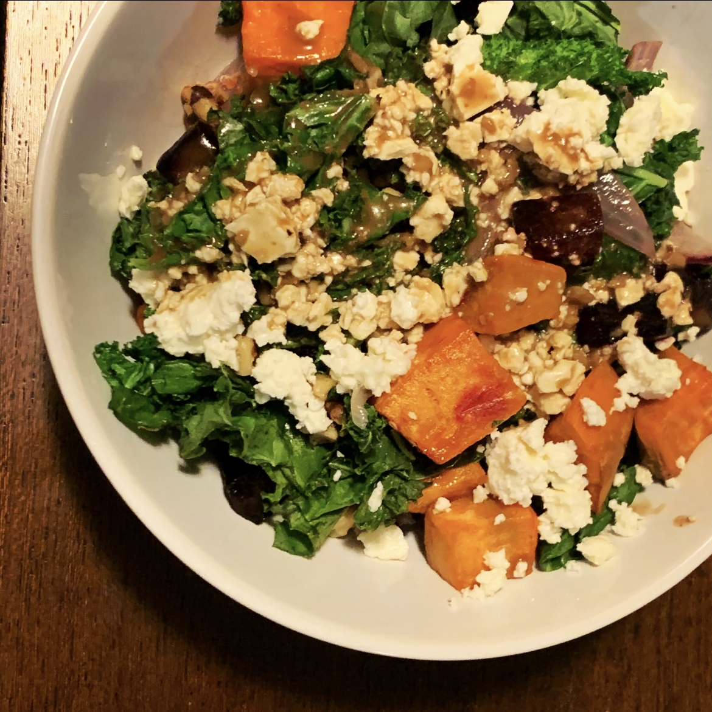

Beets & Sweets Buddha Bowl with Balsamic Dressing

Description
A hearty and warm dinner to enjoy on those autumn nights, filled with various root vegetables and greens, then topped with a tangy balsamic dressing.
Ingredients
- 3 medium beets, peeled and cubed into 1/2 inch cubes
- 2 tablespoons olive oil
- 1 large sweet potato, peeled and cubed into 1/2 inch cubes
- 1 small red onion, cut into wedges
- 2 cups kale, coarsely chopped
- 1/2 cup walnut pieces
- 2 cups hot, cooked quinoa
- 1/4 cup feta cheese, crumbled
Creaming Balsamic Dressing
- 1/4 cup olive oil
- 2 tablespoons balsamic vinegar
- 2 tablespoons mayonnaise
- 1 tablespoon lemon juice, freshly squeezed
- 2 teaspoons maple syrup or honey
- 1 teaspoon dijon mustard
- 1 clove garlic, minced
- 1/4 teaspoon each salt and pepper
Steps
- Preheat oven to 425 degrees F.
- Whisk together dressing ingredients in a small bowl. Cover and refrigerate until ready to use.
- In a medium bowl, toss beets with 2 teaspoons of oil
- Spread on pan and roast for 15 minutes.
- Remove beets from over and move to one side of the pan.
- Toss sweet potato and red onion with 2 teaspoons of oil and add to beets in a single layer on the pan.
- Roast for another 15 minutes.
- Remove pa from oven and slide potatoes and onion next to the beets.
- Toss kale with remaining oil (massaging it in) and add to vegetables on a single layer of the pan, then add walnut pieces.
- Roast for 5 minutes then remove from oven.
- To assemble, place desired amount of quinoa in the bottom of a serving bowl. Top with vegetables, walnuts, and feta, then drizzle dressing over top.